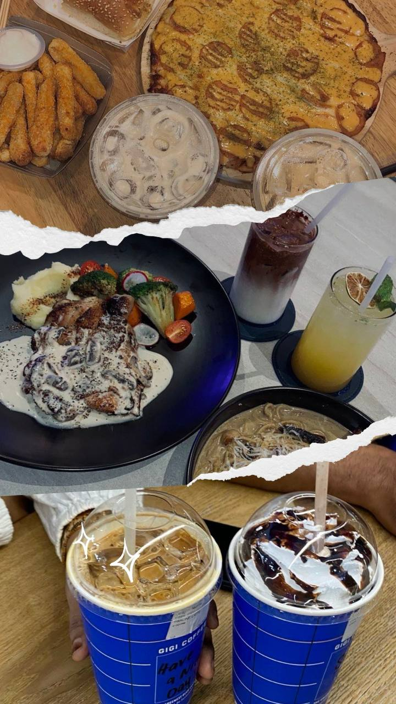

My Profile˶ᵔ ᵕ ᵔ˶
Hello! My name is Nurul Aina Batrisyia Binti Mohd Zulhusni. I'm 20 years old, from Kulim, Kedah. My birth date is 4th April 2004.

Hello! My name is Nurul Aina Batrisyia Binti Mohd Zulhusni. I'm 20 years old, from Kulim, Kedah. My birth date is 4th April 2004.
"Life is about creating yourself." – George Bernard Shaw
Hiking allows me to connect with nature and explore beautiful landscapes. Here are some of my favorite hiking moments:
I love discovering new cafes, enjoying a good cup of coffee, and chilling with my friends.
